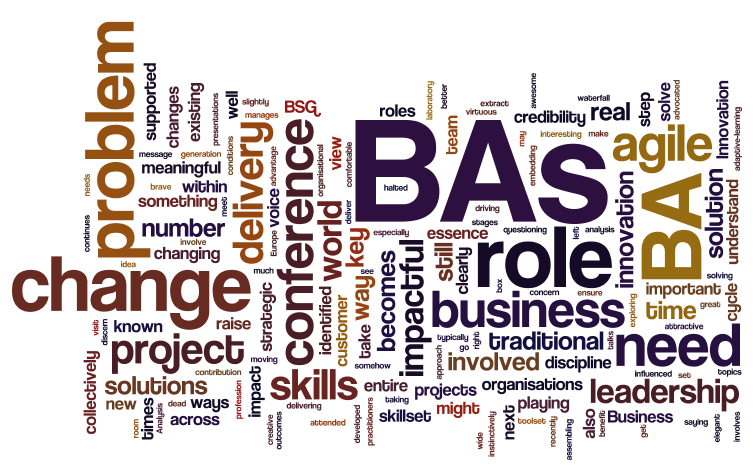

About Business Analysis
Business Analysis is the practice of enabling change in an organizational context, by defining needs and recommending solutions that deliver value to stakeholders. The set of tasks and techniques that are used to perform business analysis are defined
in A Guide to the Business Analysis Body of KnowledgeJob titles for business analysis practitioners include not only business analyst, but also business systems analyst, systems analyst, requirements engineer, process analyst, product manager,
product owner, enterprise analyst, business architect, management consultant, business intelligence analyst, data scientist, and more. Many other jobs, such as management, project management, product management, software development, quality assurance
and interaction design rely heavily on business analysis skills for success.The Business Analyst is an agent of change. Business Analysis is a disciplined approach for introducing and managing change to organizations, whether they are for-profit
businesses, governments, or non-profits.
Business analysis is used to identify and articulate the need for change in how organizations work, and to facilitate that change. As business analysts, we identify and define the solutions that will maximize the value delivered by an organization to
its stakeholders. Business analysts work across all levels of an organization and may be involved in everything from defining strategy, to creating the enterprise architecture, to taking a leadership role by defining the goals and requirements
for programs and projects or supporting continuous improvement in its technology and processes. We have the specialized knowledge to act as a guide and lead the business through unknown or unmapped territory, to get it to its desired destination.
The value of business analysis is in realization of benefits, avoidance of cost, identification of new opportunities, understanding of required capabilities and modeling the organization.Business analysis involves understanding how organizations
function to accomplish their purposes, and defining the capabilities an organization requires to provide products and services to external stakeholders.
